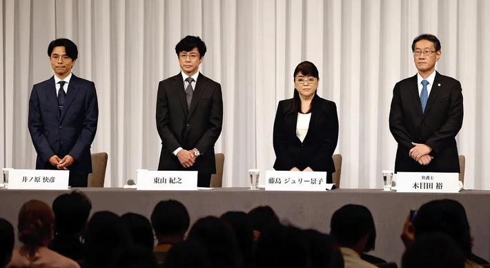
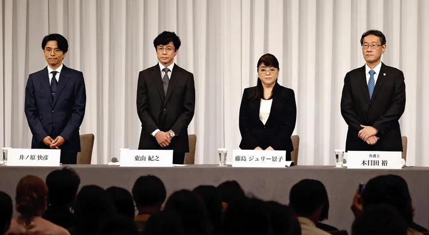
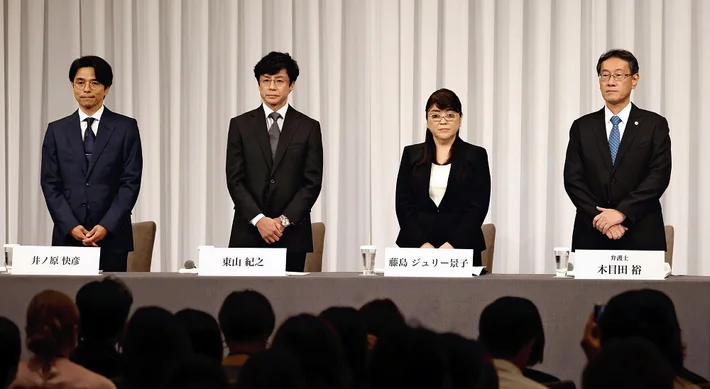

ジャニー喜多川による性加害問題は、2023年（令和5年）に表面化した、日本の大手芸能事務所・ジャニーズ事務所（現:SMILE-UP.）の創設者であるジャニー喜多川による性加害問題である。ジャニー喜多川は、同事務所に所属する男性タレントを主な性的対象として、抗拒不能な状況を利用して長期的かつ常習的に性的虐待（児童性的虐待）を行っていたとされる。 設立前の1950年代以降、ジャニーズ事務所では1970年代前半から2010年代半ばまでの間、長期間・広範にわたり、多数のジャニーズJr.に対して性加害を繰り返した。姉で副社長のメリー喜多川はジャニー喜多川の性加害行為を放置・隠蔽し、ジャニーズ事務所は適切な対応を行わなかったため、多くの被害者が生まれた。 ジャニーズ事務所では、創設初期から喜多川が同事務所に所属する未成年の男子達に対してわいせつな行為を行っているという噂があった。 1999年に『週刊文春』が喜多川の性的虐待行為に関するキャンペーンを実施し、数人の証言を得て本疑惑を報じた。ジャニーズ事務所では名誉毀損で文藝春秋を訴えたが、その民事裁判において報じられた喜多川の「セクハラ行為」は「その重要な部分について真実」と認定され、『週刊文春』の本件に関する一連の報道は名誉毀損には当たらないとの判決が下り、東京高裁の控訴審判決が2004年に確定している。この法廷での尋問において、喜多川は「彼たちはうその証言をしたということを、僕は明確には言い難いです。」と少年らが虚偽の証言をしたものではないと事実上自分で認めたかのような供述をしたため、東京高裁も喜多川による性加害は存在したものと認定したとされる。 しかし、当時はこの判決に対する日本のメディアの反応は鈍かった。日本の新聞は短く取り上げるのみでテレビでの報道はなく、芸能雑誌、スポーツ紙でも大きな扱いはされないことが多かった。裁判で被害を訴える元ジャニーズJr.達の証言の真実性が認定され、「ジャニー喜多川による少年への性虐待の事実」が認められたことをメディアは詳細に解説しなかった。 2000年には本問題が衆議院特別委員会で取り上げられ、東京都青少年健全育成条例や児童福祉法、児童買春・児童ポルノ禁止法に抵触するのではないかと疑義を呈されたが、主要メディアは取り上げなかった[信頼性要検証]。 姉で母親代わりだったメリー喜多川は、弟の喜多川の性嗜好異常を初期から認識しており、1970年代の被害者の証言、メリー喜多川と懇意にしていた新芸能学院の名和夫人の過去の発言からメリー喜多川は弟は幼い頃に性的虐待を受けて育ったため、少年たちに性的虐待をするのはそのせいで、「一種の病気」だと語っていたと推定されている。 事務所内で、性的虐待を受けることがアイドルデビューするために我慢しなければならない一種の「通過儀礼」のように捉えられ、続いてきた可能性が指摘されている。 「他のジャニーズJr.に性加害のことを話そうとしたところ、『おめでとう』 と言われた」「性加害を受けた後、仕事は明らかに増えた」「受け入れるのが当たり前で通過儀礼」「『上り詰めていくには積極的にジャニー氏を受け入れないといけないんだ。』という洗脳された状態になった」といった証言があった。 喜多川の性加害を語る元ジャニーズ所属の証言者を通してみたのは、「権力の行使による虐待」であったと述べている。喜多川はジャニーズ事務所の代表取締役社長でもある芸能プロデューサーであり、ジャニーズ Jr.の採用からデビュー、プロデュース等まですべての決定権を持っていた。 喜多川からの性的虐待を受ければ、ジャニーズ事務所の仕事での扱いが良くなり、チャンスが与えられ拒否し逆らえば、ステージの立ち位置が悪くなったりデビューできなくなるなど抵抗が著しく困難な状態であった。アイドルになる夢を持つジャニーズ Jr.達は、未成年者で事務所と契約関係を結んでおらず、立場は弱く不安定であった。タレントとしての才能の評価基準は曖昧なものであり、喜多川はジャニーズ Jr.に対して絶対的な立場を持っていた。
私はジャニーズが好きだったのでこのニュースがでた時は大きなショックを受けました。ニュースやSNSの内容に聞いていて納得する部分と疑問に思ったところもあったので気になりました。
ジャニー喜多川がしてしまった問題はとても許されることではないし、いくら自分が幼い頃にされていたからといえ他の人にしてはいけないことだったと思います。 私は、自分がされて嫌な思いをしたのなら今回の被害者の方たちのようにトラウマになったり、強い恐怖を覚えて思い出さないように同じようなことはしないと思います。 医者とかではないので分からないですが、一種の病気という一言で終わらせるようなことではなかったと思うし、姉であり、母親代わりのメリーさんが弟をかばうくらいなら その問題をもみ消すのではなく直してあげる努力をしていたら被害を受ける人たちが少しでも減っていたのではないかと思いました。 そして、悪いのは所属していたタレント達ではなくジャニー喜多川なので大手企業や中小企業の人たちが仕事を打ち切ってタレント達を追い込むのは違うのではないかと思いました。 確かに性加害問題を起こした会社の社員を使うことによってイメージが下がってしまうからとかそのタレント達を見て嫌な思いをする人も多いかもしれません。 でも、私は全員が全員性加害を受けたかは知らないけど被害者だと思っているので打ち切るのではなく救ってあげる方が良いのではないかと思いました。 打ち切ったとしてもそれはしょうがないことだと思います。ですが、ポスターの顔をわざと隠したりすることによって嫌な思いをする人だっているし、された本人も傷つくので ポスターを外すとか他にもっとやり方があったのではないかと思いました。 そして、裁判が起きて認めた時にはジャニー喜多川も生きていたのでその時にもっとメディアとかも取り上げるべきだったのではないかと思いました。 亡くなって本人がいない状態で話を出されても分からないし、本人に直接謝罪を求めれてこういう風にはなってなかったのかなと思いました。 性加害問題やそれを隠ぺいしている問題は表に出ていないだけで多いのだと知りました。そしてまだ多いと思います。 こういった被害が完全になくなるようにしていけたらいいなと思いました。
